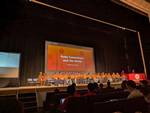

Timee Product Team Blog
https://tech.timee.co.jp/
タイミー開発者ブログ
フィード

RubyKagi 2025参加レポート（Day3）
Timee Product Team Blog
2025年4月16日から18日の3日間、愛媛県松山市にて、RubyKaigi 2025 が開催されました。 https://rubykaigi.org/2025/ タイミーでは、昨年に続き、世界中で開催される技術系カンファレンスに無制限で参加できる「Kaigi Pass」という制度を活用し、新卒内定者やインターン生を含む総勢16名が現地でカンファレンスに参加しました。 この記事では、現地参加した各エンジニアの印象に残ったセッションとその感想をまとめてお届けします。 今回はその第4回で、Day3の内容をまとめています。 Day1, Day2のセッションに関する内容についてもぜひ合わせてお読みくだ…
3日前
RubyKaigi 2025参加レポート（Day2 vol.2)
Timee Product Team Blog
2025年4月16日から18日の3日間、愛媛県松山市にて、RubyKaigi 2025が開催されました。 rubykaigi.org タイミーでは、昨年に続き、世界中で開催される技術系カンファレンスに無制限で参加できる「Kaigi Pass」という制度を活用し、新卒内定者やインターン生を含む総勢16名が現地でカンファレンスに参加しました。 この記事では、現地参加した各エンジニアの印象に残ったセッションとその感想をまとめてお届けします。 今回はその第3回で、前回に引き続きDay2の内容をまとめています。Day3のレポートも近日中に公開予定です。 読者の皆様にとって、今後の学びの参考になれば幸いで…
5日前
RubyKaigi 2025参加レポート（Day2 vol.1） 1
1
Timee Product Team Blog
2025年4月16日から18日の3日間、愛媛県松山市にて、RubyKaigi 2025が開催されました。 rubykaigi.org タイミーでは、昨年に続き、世界中で開催される技術系カンファレンスに無制限で参加できる「Kaigi Pass」という制度を活用し、新卒内定者やインターン生を含む総勢16名が現地でカンファレンスに参加しました。 前回に引き続き参加レポートの第2回として、Day2 vol.1と題し、Day2で現地参加した各エンジニアの印象に残ったセッションとその感想をまとめてお届けします。 今後も、Day2 vol.2、Day3と続けてレポートを公開予定です。 各セッションごとに内容…
7日前
RubyKaigi 2025参加レポート（Day1)
Timee Product Team Blog
2025年4月16日から18日の3日間、愛媛県松山市にて、RubyKaigi 2025が開催されました。 rubykaigi.org タイミーでは、昨年に続き、世界中で開催される技術系カンファレンスに無制限で参加できる「Kaigi Pass」という制度を活用し、新卒内定者やインターン生を含む総勢16名が現地でカンファレンスに参加しました。 本レポートでは、Day1の様子を、参加したエンジニアが注目したセッションごとに、ポイントや得た知見をまとめてご紹介します。 今後も、Day2 vol.1、Day2 vol.2、Day3と続けてレポートを公開予定です。 各セッションごとに内容を整理し、参加者自…
13日前

タイミーでProduction Readiness Checkをやってみたよ
Timee Product Team Blog
はじめに こんにちは！タイミーでPlatform Engineerをしている @MoneyForest です。 本記事では、タイミーで実施したProduction Readiness Checkの取り組みを紹介します。 Production Readiness Checkとは プロダクションレディネスチェック（Production Readiness Check）とは、「サービスが本番環境で安定して運用できる状態にあるかどうかを評価」するプロセスのことです。 UberのSREの知見から書かれた書籍 プロダクションレディマイクロサービス には、以下のように書かれています。 Uberのすべてのマイ…
17日前
【イベントレポート】try! Swift Tokyo 2025
Timee Product Team Blog
タイミーでiOSアプリエンジニアをしている前田 (@naoya)と申します。 2024年4月9日〜11日に開催された「try! Swift Tokyo」に参加してきました。 try! Swift Tokyo try! Swift Tokyoとは Swiftに関わる開発者が世界中から集まる年に一度の国際カンファレンスです。最新技術や開発の知見をシェアするトークセッションが開催される他に、エンジニア同士が交流する場としても毎年大きな盛り上がりを見せています。 今年のアップデート ロケーション 昨年は渋谷の「ベルサール渋谷ファースト」での開催でしたが、今年は立川の「立川ステージガーデン」に場所を移し…
20日前
Google Cloud Next ‘25 in Las Vegas に参加してきました！
Timee Product Team Blog
こんにちは！株式会社タイミーの貝出です。データサイエンティストとして働いており、主にカスタマーサポートの業務改善に向けたPoCやシステム開発など行っております。 先日、2025年4月9日～11日にラスベガスで開催された「Google Cloud Next '25」に、Data Science Group の小関と貝出で現地参加してきました！ 業務でも Gemini を利用することが多く、今回はAgent関連の発表も多いとのことで大変楽しみにしていました！ 今回のブログでは、現地の様子や注目した発表・セッション、そしてイベント全体の雰囲気について共有させていただきます。 イベント概要 イベント名…
20日前
ObservabilityCON on the Road Tokyo 2025に参加してきました！
Timee Product Team Blog
こんにちは！ タイミーでPlatform Engineerをしている @MoneyForest です。 ObservabilityCON on the Road Tokyo 2025に参加してきました。 参加した感想や気づきなどをお届けします。 はじめに 普段は Datadog をメインに利用している弊社ですが、他のツールなどを知ることで深まる知見もあると考え、先日開催された Grafana Labs 主催の「ObservabilityCON on the Road Tokyo」に参加してきました。本記事では、Grafana エコシステムの印象や、イベントで得られた気づきについて共有したいと思…
24日前
JaSST'25 Tokyoに参加しました
Timee Product Team Blog
タイミーQAEnablingチームの矢尻、岸、片野、山下、松田です。 ソフトウェアテストに関する国内最大級のカンファレンス「JaSST (Japan Symposium on Software Testing)」が2025/03/27、28の2日間にわたって開催されました。 speakerdeck.com 本レポートでは、印象に残ったセッションの内容を中心に、2日間の会の様子をお伝えします。 「タイミーQAの挑戦」JaSST登壇レポート：品質文化と開発生産性の両立を目指して タイミーでQAコーチを担当している矢尻です。 今年のJaSSTは、タイミーとして「タイミーQAのリアルな挑戦：DevOp…
1ヶ月前
NLP 2025の参加記録
Timee Product Team Blog
はじめに こんにちは、株式会社タイミーでデータサイエンティストとして働いている貝出です。直近はカスタマーサポートの業務改善に向けたLLM活用のPoCやシステム開発を行っております。 さて、今回は2025年3月10日（月）～3月14日（金）に開催された「言語処理学会第31回年次大会(NLP2025)」に昨年に続き参加してきましたので、その参加レポートを執筆させていただきます。 言語処理学会年次大会について www.anlp.jp 言語処理学会年次大会は言語処理学会が主催する学術会議であり、国内における言語処理の研究成果発表の場として、また国際的な研究交流の場としての国内最大規模のイベントとなって…
1ヶ月前
Rubyを3.4.2+YJITにアップデートしました
Timee Product Team Blog
こんにちは、Timee でバックエンドエンジニアとして働いている id:ryopeko です。 今回は Timee で使っている API サーバーの Ruby を最新の 3.4.2 (+YJIT) にアップデートしたことについての記事をお届けします。 1. 概要 今回の記事では、Ruby 3.3.6 から 3.4.2 へのバージョンアップについて、パフォーマンスへの影響、Devin を使った実作業、rubocop.yml の対応など、具体的な取り組みをご紹介します。安定性を重視した今回のアップデートの背景や、今後の展望についても触れていきます。 2. バージョンアップによるパフォーマンスへの影…
2ヶ月前
Women in Agile Tokyo 2025に参加してきました！
Timee Product Team Blog
こんにちは、shihorinとmahoです。 先日、Women in Agile Tokyo 2025というカンファレンスに参加してきました！ 参加した感想や気づきを対談形式でお届けします。 登場人物の紹介 shihorin 2024年5月タイミーにジョインして専任スクラムマスターになりました。 maho HRから社内転職でスクラムマスターになりました。スクラムマスター歴2年目に突入。 参加して思ったこと shihorin: mahoさん、Women in Agileお疲れ様でした！参加してみてどうでしたか？私は、RSGTでWomen in Agileの運営に携わっている方々の座談会を聞いて興…
3ヶ月前
DatadogのAWSメトリクス収集をCloudWatch GetMetric APIからMetric Streamsに移行してMTTDを短縮した話
Timee Product Team Blog
はじめに こんにちは！ タイミーでPlatform Engineerをしている @MoneyForest です。 今回は、弊社のDatadogにおけるAWSメトリクス収集を、従来のCloudWatch GetMetric APIからCloudWatch Metric Streams方式に移行することで高速化した取り組みについて紹介します。 背景 タイミーのワーカー様向けアプリケーションは、ピーク時に1分あたり十数万リクエストを処理するような規模で運用されています。そのため、システムの異常を素早く検知し、対応することが求められます。 主にシステムの異常検知は、メトリクス、ログ、APMをソースとし…
3ヶ月前
東京Ruby会議12に参加しました
Timee Product Team Blog
みんなでパシャリ タイミーの新谷、神山です。 東京Ruby会議12 が1月18日に開催されました。タイミーは Gold Sponsor として協賛をさせていたただき、ブースを出展していました。ブースに来ていただいたみなさんありがとうございます！ 盛況なブースの様子 タイミーからは @ryopeko が「functionalなアプローチで動的要素を排除する」というタイトルで登壇しました。 speakerdeck.com また、タイミーには世界中で開催されているすべての技術カンファレンスに無制限で参加できる「Kaigi Pass」という制度があります。 productpr.timee.co.jp …
4ヶ月前
ファインディ株式会社 x 株式会社タイミー 合同勉強会
Timee Product Team Blog
「エンドユーザーのためのデータ品質向上への取り組みと展望」というタイトルでファインディさんとクローズドな合同勉強会を実施しましたので、タイミー目線でのレポート記事をお届けします。 きっかけ 以前同じ企業に所属していた両社の社員の間で合同勉強会の話が持ち上がったのがきっかけです。 両社共にデータ品質向上のための取り組みを進めており、参考になることが多いのではということで合同勉強会を開催する運びとなりました。 勉強会当日の流れ 勉強会はファインディさんのオフィスにて開催いただき、タイミーからはデータアナリスト、アナリティクスエンジニア、データエンジニア等のメンバーでお邪魔しました。 各社でLTを行…
4ヶ月前
yykamei が Regional Scrum Gathering Tokyo 2025 に参加してきました
Timee Product Team Blog
はい、亀井です。 yykamei という名前でインターネット上ではやらせてもらっています。所属はタイミーです。 今回、 Kaigi Pass という制度を利用して Regional Scrum Gathering Tokyo 2025 （RSGT 2025） にボランティアスタッフとして参加させていただきました。ShinoP さんと takakazu さんに「RSGT 2025 でボランティアスタッフをやるのですが、スタッフでも Kaigi Pass 使えます？」と相談したところ「いいね！」というお声がけをもらい、晴れて Kaigi Pass を利用して参加することができました。お二人に感謝。…
4ヶ月前
より信用できる効果検証のためにA/BテストとDIDの仕組みづくりをした話
Timee Product Team Blog
こんにちは。タイミーのデータアナリティクス部でデータアナリストをしている亀山です。担当業務としては、主に営業部門のデータ分析を行っています。 今日はA/Bテストと※DIDの効果検証がより信用できるように仕組みづくりをした話を紹介したいと思います。 ※DID（Difference in Differences、差分の差分法）は、ある施策の実施前後で、影響を受けたグループ（比較群）と影響を受けなかったグループ（対照群）の変化を比較することで、介入の効果を推定する手法です。 取り組んだ背景 以前同じ部署の夏目さんがブログで取り上げている通り、データアナリティクス部では過去に、効果検証の事前設計と結果…
5ヶ月前
pmconf2024に参加してきました
Timee Product Team Blog
タイミーのプロダクトマネージャー（以下、PM）の 柿谷（@_kacky）、 高石（@tktktks10）、吉池、大歳 です。 今回は、タイミーの「Kaigi Pass」制度を利用し、12/6にオンサイト開催されたプロダクトマネージャーカンファレンス（以下pmconf）のDAY2に参加してきました。 この制度を通じて、非常に有意義な学びを得ることができましたので、その内容を共有します。 2024.pmconf.jp productpr.timee.co.jp プログラム概要 パネルディスカッション テーマ：「プロダクトマネージャーと仮説/戦略」 登壇者：FoundX 馬田さん、Zen and C…
5ヶ月前
【イベントレポート】Go See！で見つけるプロダクト開発の突破口
Timee Product Team Blog
イベント概要 12月17日（火）にpmconf 2024のサイドイベントとして「Re:cycle〜pmconf 2024編〜」を開催しました！ このイベントはReject Conライクなイベントとして通過しなかったプロポーザルをアップデートして発表することをコンセプトにIVRyさん、DMMさんとの共催で開催しました。 今回はこの勉強会からタイミーのプロダクトマネージャーである大嶋さん（@ta0o_o0821）の発表を書き起こしイベントレポート形式でお伝えします。 オープニング お品書き
5ヶ月前
RBS に出会って変わった Ruby への向き合い方
Timee Product Team Blog
目次 目次 はじめに RBS について rbs-inline と Steep について RBS に出会ってからの Ruby への向き合い方 単一の型を返す意識がついた メソッドの戻り値の型だけを見て実装する機会が増えた Ruby で型を書くのも良いなと思った はじめに こちらは Timee Product Advent Calendar 2024 の24日目の記事です。 前日は @beryu の iOSの職能チームが存在しない組織で、WWDCハッカソンを企画・開催しました でした。 こんにちは。バックエンドエンジニアの @dak2 です。 タイミーではバックエンドの Ruby on Rails…
5ヶ月前
統計検定準1級（CBT）で、最優秀成績賞をいただいたので勉強法を紹介します
Timee Product Team Blog
Timee Advent Calendar 2024 23日目の記事です。 こんにちは、タイミーでデータアナリストをしているyuzukaです。 先日、統計検定準1級に合格し、最優秀成績賞をいただきました🌸 弊社からは別のアナリストがすでに統計検定準1級の合格体験記を出してくれていますが、合格体験記はあればあるだけ良いと思うので、私も書こうと思います。 受験の動機 社会人7年目で文系職からデータアナリストに転向しましたが、やはり専門性で周囲に後れをとっていると感じ、統計の知識を早急に身につけたいと考えていました。 取得した資格は履歴書などにも書けるため、アナリストに転向してから早い段階で取得して…
5ヶ月前
iOSの職能チームが存在しない組織で、WWDCハッカソンを企画・開催しました
Timee Product Team Blog
これはTimee Product Advent Calendar 2024の23日目の記事です。 こんにちは。タイミーでiOSアプリを作っている岐部(@beryu) です。 もうすぐクリスマスですね！月初から我が家のリビングに置いてあるクリスマスツリーもだいぶ見慣れてきました。 さて、今年も例年通りApple社による開発者カンファレンス「WWDC24」が夏に開催されましたね。 弊社の体制としては”iOSチーム”という単位のチームが存在せず、プロダクトを機能領域ごとに分割した職種横断チームで機能開発をしています。そのため、普通に業務をする上ではWWDCで得た知識についてiOSエンジニアが積極的に…
5ヶ月前
組織の立ち上げ期から取り入れるチートポTIPS
Timee Product Team Blog
本記事は、 Timee Advent Calendar 2024 の 12/22 公開分の記事になります。 はじめに 前提：チームトポロジーとは？ 組織規模とフェーズにおけるチームトポロジーへの誤解 備えとしてのチームトポロジー グロース期の組織への段階的なチームトポロジーの適用 チーム組成のトリガーを見極める 組成に備えてチームメンバーの志向を理解しておく 最後に はじめに 株式会社タイミーでVPoEをつとめております、赤澤 a.k.a chango（@go0517go）です！ 2024年2月に私がタイミーにジョインして以来、タイミーのプロダクト開発組織全体で適用・実践している「チームトポロ…
5ヶ月前
PlaywrightとMSWを組み合わせる
Timee Product Team Blog
この記事はTimee Product Advent Calendar 2024 シリーズ2の21日目の記事です。 はじめに タイミーでフロントエンドエンジニアをしている大川です。 PlaywrightでのUI自動テストを運用してきた中で学んだ、PlaywrightとMock Service Worker（以降、MSW）を組み合わせたAPIのモック方法を紹介します。 Playwrightのテスト中にモックレスポンスを定義する バックエンドと連携しているシステム全体をテストすることで正常に動作しているか確認していくことは大切ですが、普段のUI開発やUIで利用しているライブラリアップデート後の動作確…
5ヶ月前
MySQL実行計画によるパフォーマンスチューニングの実践
Timee Product Team Blog
こんにちは。エンジニアリング本部 プラットフォームエンジニアリングチームの徳富です。 この記事は、 Timee Product Advent Calendar 2024 の 20 日目として、EXPLAINを使用した実行計画の見方についてご紹介します。 背景 タイミーでは、会社の成長に伴い、パフォーマンスチューニングが喫緊に求められています。このような課題に対処するため、クエリのパフォーマンスチューニングにはEXPLAINを使用した実行計画の確認が非常に重要です。しかし、実行計画の解釈には社内でばらつきがありました。この問題を解消するために、実行計画の見方を社内でまとめ、共有することにしました…
5ヶ月前
Slack の Huddles を使ったプラクティスとその背後にある考え
Timee Product Team Blog
はい、亀井です。 yykamei という名前でインターネット上では活動しています。所属はタイミーです。 今回は Timee Advent Calendar 2024 の 19 日目の記事として、Slack の Huddles を使ったプラクティスとその背後にある考え、というタイトルで、筆を取らせていただきました。 仕事におけるコミュニケーションツールはいろいろありますが、その中でも Slack を使っている組織は多いのかなと思います。その Slack の機能の一つとして Huddles が 2021 年にリリースされました。当時はコロナ禍ということもあり、リモートワークが浸透してきた中でどのよ…
5ヶ月前
packwerk チェッカーとちゃんと向き合う
Timee Product Team Blog
こちらは Timee Product Advent Calendar2024 の18日目の記事です。前日は @ryopeko による「RubyWorld Conference 2024に参加してきた」でした。 こんにちは。タイミーでバックエンドのテックリードをしている @euglena1215 です。 タイミーではモノリスな Ruby on Rails アプリケーションに一定の規律を設けるために Packwerk を導入しています。 A Packwerk Retrospective であったように、Packwerk はあくまでツールであり鋭いナイフです。ツールは使い手が意図を持って扱わないとそ…
5ヶ月前
モノリスの運用課題を解決するためにコードオーナーをSentryとDatadogに送る
Timee Product Team Blog
モノリス特有の運用課題 こんにちは。バックエンドエンジニアの須貝です。 タイミーのバックエンドAPIはモノリスなRuby on Railsアプリケーションです。2024年12月現在、このリポジトリ上で10程度のチームが開発しています。 モノリスは利点も多いのですが、チームが増加するにつれて運用面でモノリス特有の難しさを感じることも増えてきました。例えば、SentryやDatadogで何かエラーや問題を検知しても「これはどこのチームの持ち物なのか」という責任があいまいになってしまい改善がなかなか進まない、基盤的なチームがエラーのトリアージをするにしても調査の負担が大きい、といった課題がありました…
5ヶ月前
英語YATTEIKI
Timee Product Team Blog
Timee Advent Calendar 2024 13日目の記事です。 こんにちは！バックエンド・エンジニアの松岡です。 僕は2024年3月にタイミーに入社して、オフショア開発チームでブリッジ・エンジニアをしています。 チームメンバーの多くはオフショア先のベトナムの方々で、僕はそんなみんなと一緒にわいわい開発しています。 そんなチームではコミュニケーションの多くが英語で行われていますが、僕の英語力は、、、、 ということで今回は、英語学習について僕の取り組みを紹介します！ 目次 過去の英語力 学習をはじめるきっかけ 目指すゴール CEFRとは B2を選ぶ理由 ゴールまでの学習量 学習方法 S…
5ヶ月前
Vertex AI Pipelinesテンプレートを管理するArtifact Registryの導入
Timee Product Team Blog
Timee Product Advent Calendar 2024 13日目の記事です。 MLOpsエンジニアとして10月にタイミーにジョインした、ともっぴです。 データエンジニアリング部 データサイエンス（以下DS）グループに所属し、ML基盤の構築・改善に取り組んでいます。 概要 本記事では、Vertex AI Pipelinesを効率的に開発するために行った 「Vertex AI Pipelinesテンプレートを管理するArtifact Registryの導入」 の取り組みを紹介します。 過去、DSグループが取り組んできたVertex AI Pipelinesの開発効率化は、以下の記事を…
5ヶ月前